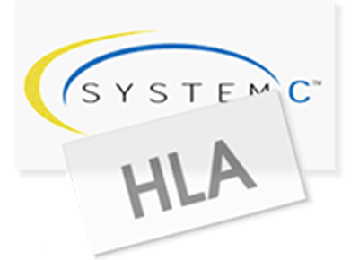

All model files and output files are in plain text format, allowing easy generation and processing with custom tools or 3rd party software. OMNEST also provides command-line tools and C++ libraries to manipulate them.

OMNEST allows you to combine native and SystemC modules in the same simulation without the performance penalty typically associated with co-simulation. OMNEST can also participate in HLA federations and can be extended to interoperate with other simulators through other means.
Simulations can be redistributed, and users will be able to run them with different parameter settings. The simulation kernel, model components, and even entire simulations can be embedded as libraries into your software products. OMNEST has been successfully embedded into various simulators, covering a wide range of applications.
The OMNEST IDE is based on Eclipse, a software product widely used by many companies as an integration platform. Third-party extensions, such as UML tools and source code analyzers, can be obtained from the Eclipse Marketplace. You can also extend the Simulation IDE and its tools with new functions, such as domain-specific model validation.